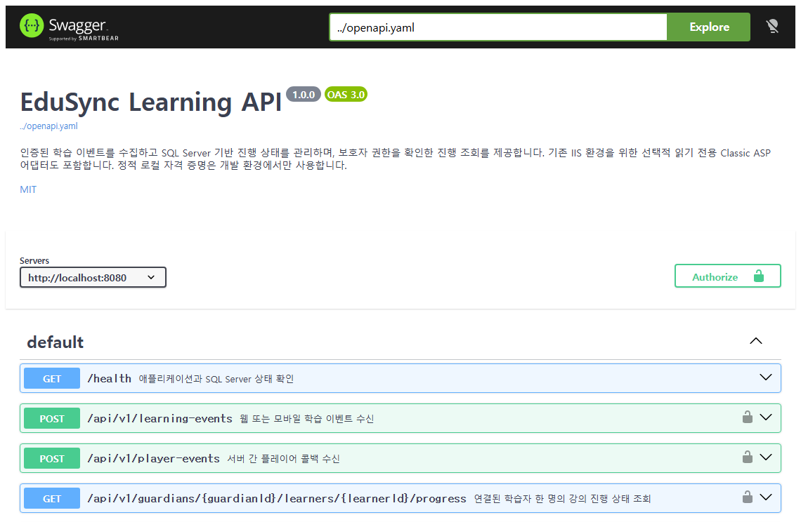
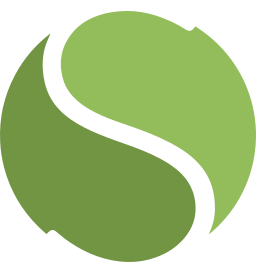
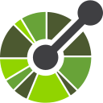
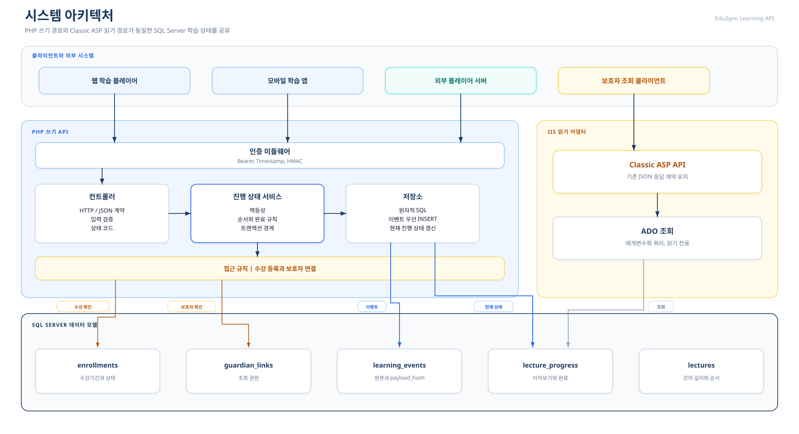
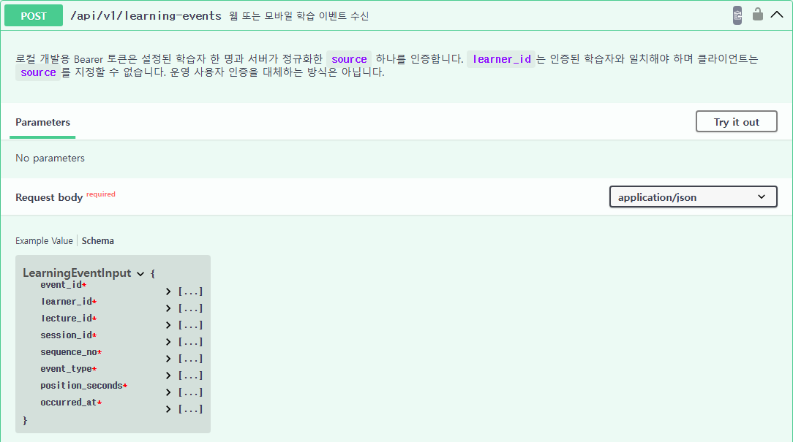
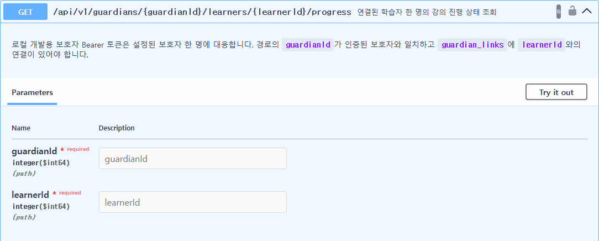

개인 프로젝트
EduSync 강의 이어보기
학습자가 강의를 다시 열었을 때 마지막으로 보던 곳에서 이어 볼 수 있도록 시청 기록을 관리하는 API입니다.
- 맡은 일
- 시청 이력과 이어보기 위치를 따로 저장하고, 기록이 늦게 도착하거나 동시에 들어올 때 어떤 값을 반영할지 정했습니다.
- 확인한 결과
- 같은 강의에서 늦게 도착한 기록은 이어보기 위치를 바꾸지 않았고, 직접 되감은 위치는 반영됐습니다.


- 구분과 기간
- 개인 프로젝트 (2026.07.20~07.26, 보강 08.02)
- 사용 기술
- PHP 8.3,

Slim 4, SQL Server 2022, PDO_SQLSRV,
SQL Server 2022, PDO_SQLSRV, 
OpenAPI, Docker, Classic ASP
Docker, Classic ASP
설계에서 내린 결정
같은 이벤트를 동시에 보내도 한 건만 반영
저장하기 전에 같은 ID가 있는지만 확인하면 동시에 들어온 두 요청이 모두 검사를 통과할 수 있습니다. 그래서 발행처와 이벤트 ID를 묶어 DB에서 한 건만 저장하도록 했습니다. 같은 키가 다시 들어오면 본문 해시를 비교해 단순 재전송은 중복으로 알리고(200), 내용이 다르면 충돌로 돌려보냅니다(409).
늦게 온 기록과 사용자의 되감기를 구분
수신 이력(learning_events)과 현재 상태(lecture_progress)는 한 트랜잭션에서 갱신하고 UPDLOCK, HOLDLOCK으로 동시 쓰기를 제어했습니다. 늦게 도착한 시청 지점은 최장 기록을 갱신해도 이어보기를 바꾸지 않습니다. 사용자가 직접 되감으면 이어보기 위치도 갱신합니다.
기존 ASP 화면에서는 조회만 허용
기존 IIS 화면에 필요한 기능은 진도 조회였습니다. 이 화면에서도 시청 기록을 수정하면 이어보기 위치를 정하는 규칙을 두 곳에서 관리해야 합니다. 기록은 PHP API에서만 반영하고, Classic ASP는 로컬 요청에 한해 조회 전용 DB 계정으로 같은 진행 상태를 읽도록 했습니다.
무엇을 확인했나
| 들어온 기록 | 이어보기 | 최장 시청 |
|---|---|---|
| 첫 기록 | 100초 | 100초 |
| 늦게 도착한 기록 | 100초 | 150초 |
| 이후 직접 되감기 | 50초 | 150초 |
- Docker Compose에서 계약 테스트, HTTP와 SQL Server 통합 테스트, 동시성 시나리오 6종을 통과했습니다.
- 데모 16종 모두 통과. HTTP 응답과 SQL Server에 남은 값을 대조했습니다.
- Windows IIS 10에서 정상 조회(200), 입력 오류(400), 데이터 없음(404)을 확인했습니다.
검증 범위
신뢰된 외부 플레이어 서버와 루프백 전용 Classic ASP 읽기 어댑터를 기준으로 검증했습니다. 리버스 프록시 배치, 운영 부하, 장기 토큰 운용은 추가 검증이 필요합니다.
시스템 구조
인증된 학습 이벤트 → 이벤트 원장 우선 기록 → 진행 상태 잠금, 갱신 → commit/rollback → 보호자, 레거시 읽기


시청 기록 전송과 진행 상태 조회




코드와 자료
EduSync 저장소 실행 검증 자료 아키텍처와 데이터 흐름 학습 이벤트 처리 구조도 GitHub Actions 검증

용어 설명
- Key-range lock
- 아직 행이 없는 최초 생성 구간까지 잠가 동시 insert와 update가 같은 진행 상태를 만들도록 하는 SQL Server 잠금입니다.